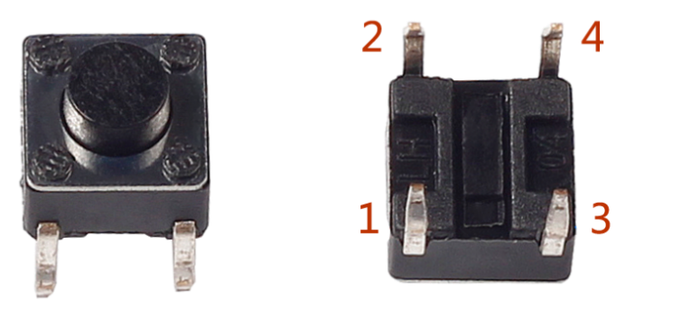
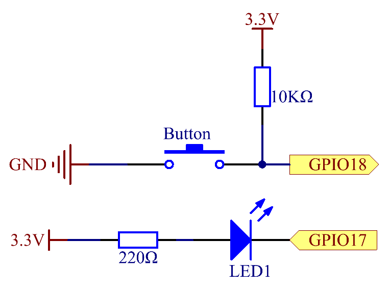
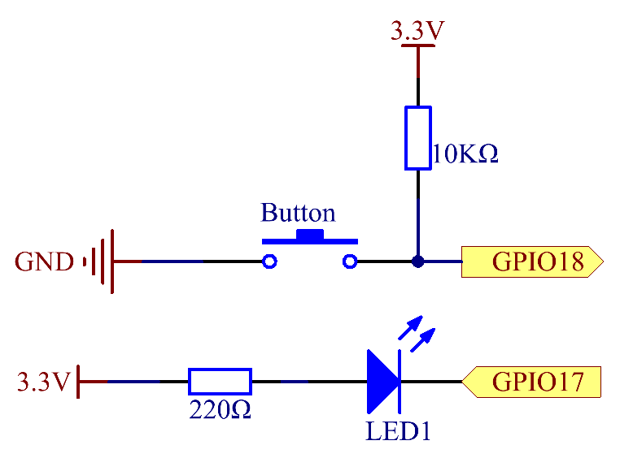

Note
Bonjour, bienvenue dans la communauté SunFounder Raspberry Pi & Arduino & ESP32 Enthusiasts sur Facebook ! Explorez plus en profondeur Raspberry Pi, Arduino et ESP32 avec d’autres passionnés.
Pourquoi rejoindre ?
Support d’experts : Résolvez les problèmes après-vente et relevez les défis techniques grâce à l’aide de notre communauté et de notre équipe.
Apprendre & partager : Échangez des astuces et des tutoriels pour améliorer vos compétences.
Aperçus exclusifs : Obtenez un accès anticipé aux annonces de nouveaux produits et aux avant-premières.
Réductions spéciales : Bénéficiez de réductions exclusives sur nos nouveaux produits.
Promotions festives et concours : Participez à des concours et à des promotions spéciales pendant les fêtes.
👉 Prêt à explorer et créer avec nous ? Cliquez sur [Ici] et rejoignez-nous dès aujourd’hui !
2.1.1 Bouton
Introduction
Dans cette leçon, nous apprendrons à allumer ou éteindre une LED à l’aide d’un bouton.
Composants

Principe
Bouton
Le bouton est un composant commun utilisé pour contrôler les appareils électroniques. Il sert généralement de commutateur pour connecter ou couper les circuits. Bien que les boutons existent dans différentes tailles et formes, celui utilisé ici est un mini-bouton de 6 mm comme illustré dans les images ci-dessous.
Les deux broches de gauche sont connectées, et celles de droite sont similaires à celles de gauche, comme montré ci-dessous :
{kind=link}
Le symbole suivant est souvent utilisé pour représenter un bouton dans les circuits.

Lorsque le bouton est pressé, les 4 broches sont connectées, fermant ainsi le circuit.
Schéma électrique
Utilisez un bouton normalement ouvert comme entrée pour le Raspberry Pi. Le schéma de connexion est illustré ci-dessous. Lorsque le bouton est pressé, le GPIO18 passe à un niveau bas (0V). Nous pouvons détecter l’état du GPIO18 via un programme. Si le GPIO18 passe à un niveau bas, cela signifie que le bouton est pressé. Vous pouvez exécuter le code correspondant lorsque le bouton est pressé, et la LED s’allumera.
Note
La broche la plus longue de la LED est l’anode et la plus courte est la cathode.
 

{kind=link}
Procédures expérimentales
Étape 1 : Construisez le circuit.

Pour les utilisateurs du langage C
Étape 2 : Ouvrez le fichier de code.
cd ~/davinci-kit-for-raspberry-pi/c/2.1.1/
Note
Changez de répertoire pour accéder au chemin du code de cette expérience via cd.
Étape 3 : Compilez le code.
gcc 2.1.1_Button.c -lwiringPi
Étape 4 : Exécutez le fichier exécutable.
sudo ./a.out
Une fois le code exécuté, appuyez sur le bouton, la LED s’allume ; sinon, elle s’éteint.
Note
Si cela ne fonctionne pas après l’exécution ou si un message d’erreur s’affiche : « wiringPi.h: Aucun fichier ou répertoire de ce type », veuillez vous référer à C code is not working?.
Code
#include <wiringPi.h>
#include <stdio.h>
#define LedPin 0
#define ButtonPin 1
int main(void){
// Lorsque l'initialisation de wiringPi échoue, afficher un message à l'écran
if(wiringPiSetup() == -1){
printf("setup wiringPi failed !");
return 1;
}
pinMode(LedPin, OUTPUT);
pinMode(ButtonPin, INPUT);
digitalWrite(LedPin, HIGH);
while(1){
// Indiquer que le bouton a été pressé
if(digitalRead(ButtonPin) == 0){
// LED allumée
digitalWrite(LedPin, LOW);
// printf("...LED allumée\n");
}
else{
// LED éteinte
digitalWrite(LedPin, HIGH);
// printf("LED éteinte...\n");
}
}
return 0;
}
Explication du code
#define LedPin 0
Le GPIO17 sur la carte T_Extension est équivalent à GPIO0 dans wiringPi.
#define ButtonPin 1
Le bouton est connecté à GPIO1.
pinMode(LedPin, OUTPUT);
Définit LedPin comme sortie pour pouvoir lui attribuer une valeur.
pinMode(ButtonPin, INPUT);
Définit ButtonPin comme entrée pour lire sa valeur.
while(1){
// Indiquer que le bouton a été pressé
if(digitalRead(ButtonPin) == 0){
// LED allumée
digitalWrite(LedPin, LOW);
// printf("...LED allumée\n");
}
else{
// LED éteinte
digitalWrite(LedPin, HIGH);
// printf("LED éteinte...\n");
}
}
if (digitalRead(ButtonPin) == 0) : vérifie si le bouton a été pressé. Exécute digitalWrite(LedPin, LOW) pour allumer la LED lorsque le bouton est pressé.
Pour les utilisateurs de Python
Étape 2 : Ouvrez le fichier de code.
cd ~/davinci-kit-for-raspberry-pi/python
Étape 3 : Exécutez le code.
sudo python3 2.1.1_Button.py
Appuyez maintenant sur le bouton et la LED s’allumera ; appuyez à nouveau sur le bouton et la LED s’éteindra. En même temps, l’état de la LED sera affiché à l’écran.
Code
Note
Vous pouvez Modifier/Réinitialiser/Copier/Exécuter/Arrêter le code ci-dessous. Mais avant cela, vous devez accéder au chemin du code comme davinci-kit-for-raspberry-pi/python.
import RPi.GPIO as GPIO
import time
LedPin = 17 # Définir GPIO17 comme broche LED
BtnPin = 18 # Définir GPIO18 comme broche du bouton
Led_status = True # Initialiser l'état de la LED à True (ÉTEINT)
# Définir une fonction d'initialisation
def setup():
# Configurer les GPIO en mode Numérotation BCM
GPIO.setmode(GPIO.BCM)
GPIO.setup(LedPin, GPIO.OUT, initial=GPIO.HIGH) # Configurer LedPin en sortie, avec un niveau initial élevé (3,3V)
GPIO.setup(BtnPin, GPIO.IN) # Configurer BtnPin en entrée.
# Définir une fonction de rappel pour le bouton
def swLed(ev=None):
global Led_status
# Basculer l'état de la LED (allumé-->éteint; éteint-->allumé)
Led_status = not Led_status
GPIO.output(LedPin, Led_status)
if Led_status:
print ('LED OFF...')
else:
print ('...LED ON')
# Définir la fonction principale
def main():
# Détecter un front descendant sur BtnPin
# et appeler la fonction de rappel swLed
GPIO.add_event_detect(BtnPin, GPIO.FALLING, callback=swLed)
while True:
# Ne rien faire.
time.sleep(1)
# Définir une fonction destroy pour nettoyer après l'exécution
def destroy():
# Éteindre la LED
GPIO.output(LedPin, GPIO.HIGH)
# Libérer les ressources
GPIO.cleanup()
# Si ce script est exécuté directement :
if __name__ == '__main__':
setup()
try:
main()
# Lorsque 'Ctrl+C' est pressé, la fonction
# destroy() sera exécutée.
except KeyboardInterrupt:
destroy()
Explication du Code
LedPin = 17
Définir GPIO17 comme broche LED.
BtnPin = 18
Définir GPIO18 comme broche du bouton.
GPIO.add_event_detect(BtnPin, GPIO.FALLING, callback=swLed)
Configurer une détection de front descendant sur BtnPin. Lorsque la valeur de BtnPin passe d’un niveau élevé à un niveau bas, cela signifie que le bouton a été pressé. La fonction swLed est alors appelée.
def swLed(ev=None):
global Led_status
# Basculer l'état de la LED (allumé-->éteint; éteint-->allumé)
Led_status = not Led_status
GPIO.output(LedPin, Led_status)
Définir une fonction de rappel pour le bouton. Lors de la première pression sur le bouton, si la condition not Led_status est fausse, la fonction GPIO.output() est appelée pour allumer la LED. En appuyant à nouveau sur le bouton, l’état de la LED passe de faux à vrai, éteignant ainsi la LED.